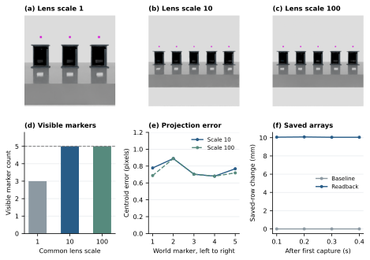
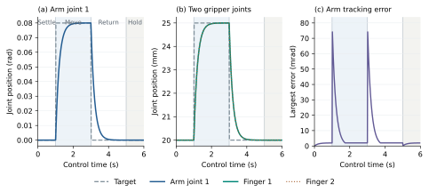
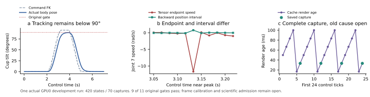
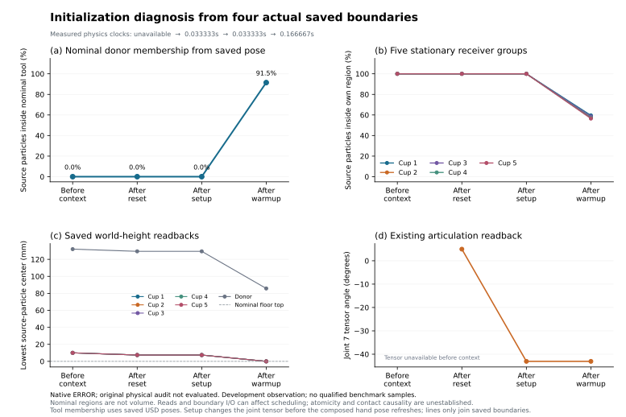
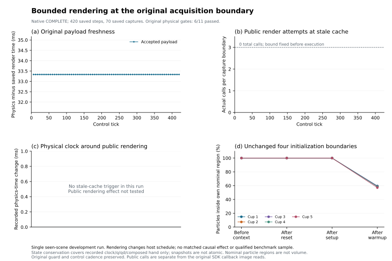
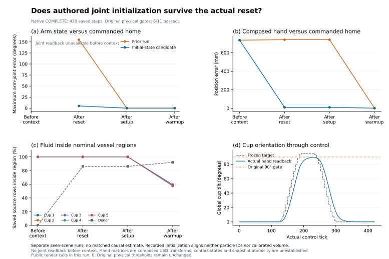

Motion and containment are not certified.
Particles with very low world-z had left the finite floor footprint; low z alone is not proof of floor penetration. Fixed world-cylinder counts also do not establish liquid inside a moving receiver cup.
Memory, timing, and process compliance
in laboratory tasks.
Can an embodied policy remember which vessel was treated, wait for the required interval, and follow the process—even when the scene no longer reveals the answer?
The design separates memory and timing demands from tool access, and evaluates both outcomes and process traces. Current native results are development diagnostics. Full scientific acceptance and the contribution gate remain open.
Not submitted · benchmark_complete = false · conference_ready = false
Five vessels share the same geometry and physical occlusion. A first operation identifies a recipient; a later operation must return to it after a specified delay. Memory and timing are varied while the world and controller stay matched.
Proposed M0 uses a persistent dye cue. Proposed M1 uses only the real three-second A-pour cue; afterward, a common stationary home and physical occlusion must remove recipient and clock shortcuts. These physical cue requirements have not passed native validation.
M0 / M1 × relaxed / relative tolerance η=ε/D of 0.30 / 0.15 / 0.08. Shared world, seed, assets and controller. A finite scripted reference grid exists; the qualified physical eight-condition benchmark is incomplete.
○ planned benchmark conditions; not eight certified results
Raw RGBD + proprioception + language. No public clock.
The same A fields, plus a bare timestamp.
Tool-assisted reference track, reported separately.
Outcome and process are scored together; verifier state is private. Paper A evaluates frozen policies.
Each result has a scope and a denominator. Native development runs, CPU feasibility, and formal benchmark experiments are separate populations.
Loading the versioned evidence snapshot…

V34 / 20 development captures. Diagnostic magenta markers are excluded from benchmark cues. Lens settings recover visibility of all five slots, but M0 dye readability remains open. Saved row displacement is not calibrated volume or verified particle identity; multiple settings changed.

V35 / one run, 360 physics states, 60 targets. Only joint 1 and finger movement are exercised here. Two shutdown callback errors are retained. This does not establish grasping, pouring, the 200-call reference hardware protocol, or VLA performance.

One GPU0 development run: 420 states and 70 captures. Reanalysis passes 9 of 11 original gates; tilt and workspace containment fail. Endpoint and interval speeds estimate different quantities. Angular frame calibration and the old camera failure remain open.

Four actual initialization snapshots from an incomplete development run. Warmup receiver-region retention is already 56.5–59.6% before control. Donor containment changes with the moving tool pose. Counts are not calibrated volume; contact causality and snapshot atomicity remain open.

420 states, 70 captures and 71 target calls. All eleven original physical gates were evaluated: 6/11 pass. The protocol allows at most three public rendering calls per stale boundary. This run made zero public rendering calls, so the recovery branch and conservation of recorded clock, joint state and hand pose under rendering remain NOT_TESTED. Particle/internal-solver conservation and atomic snapshots are not established. Complete acquisition does not demonstrate a rendering repair or population effect.

420 states, 70 captures and 71 target calls; original physical gates: 6/11 pass, 5 fail. After-reset arm home error is 0.087 rad and hand home position error is 9.76 mm, compared descriptively with 2.706 rad and 740.29 mm in the separate V50 trace. Receiver fluid loss before control and failed tilt/retention/workspace/floor gates remain unresolved. Zero public render calls: recovery and live clock/joint/hand conservation remain NOT_TESTED. These sequential single seen traces are not matched causal replicates and add zero qualified experts.
The shared-fluid diagnostic holds the planned stage, controller and trajectory fixed. Increasing aggregate capacity removes the reported PhysX backend error, but does not resolve tilt or particle scatter.
| Measurement | R2 | R3 | Interpretation |
|---|---|---|---|
| GPU aggregate capacity | 1,024 | 8,192 | Only planned backend capacity changed |
| Critical PhysX errors | 2 | 0 | Reported capacity error cleared |
| Maximum actual cup tilt | 89.651678° | 89.627012° | FAIL · frozen threshold ≥90° |
| Workspace containment gate | Not gated in R2 | FAIL | Particle scatter remains unresolved |
| States / captures / target calls | 420 / 70 / 71 | 420 / 70 / 71 | One fixed diagnostic run per revision |
A fixed supply tool on the Franka hand moves above five receivers. This replay uses all 70 saved RGB captures at 10 fps, without added cue markers or annotations. It is a lossy presentation derivative of the closed captures.
One seen development run. The replay does not validate dye readability, a real three-second M1 cue, grasping or calibrated liquid transfer. Tilt and workspace containment fail.
Download 7 s replay ↓Particles with very low world-z had left the finite floor footprint; low z alone is not proof of floor penetration. Fixed world-cylinder counts also do not establish liquid inside a moving receiver cup.
The closed A run reached reset and sensor warmup, then stopped before control. Fresh collection requires independent preflight and recorded library identity. Keep original targets, gains and physics, and compare actual mass/inertia before interpreting tracking or contact. Liquid qualification, eight matched cells and learning experiments remain open.
Original failed runs, warnings and frozen thresholds are retained. Engineering validity is not full dynamics or chemical calibration.
A formatted paper and reproducible diagnostics do not replace scientific admission. The original requirements remain the acceptance criteria.
Five-slot visibility, persistent M0 dye, real three-second M1 A-pour, common stationary home, liquid containment and calibrated quantity.
Whole-scene five-fold elapsed-time ridge R² ≤0.05 (G8), cue presence / identity ≥0.95 and scene reliability (G9), with post-ID, paused, timestamp and oracle controls. No reuse of development scenes as fresh confirmation.
700 actual expert demonstrations; per-stratum success ≥0.95 and |median(e)| ≤T_ctrl=0.1 s (one control period). Five matched VLA configurations × three seeds, shared backbone, data and compute, parameter counts within ±5%.
Native 10 Hz / chunk 16 / replan 8 / >2 s timeout; paused and actual asynchronous conditions, 200 reference hardware calls. Paired language/numeric delays, held-out paraphrases, closed/compositional/open tasks and family/system transfer.
Two real benches × nine planned calibration cells; uncertainty, held-out residuals and ±30% sensitivity. Instrumented process/quantity/contact tasks. Preregister power and E1/E2/E3 effects ≥0.10; paired task/seed bootstrap (2,000) and Holm correction.
CON03 MAJOR_OPEN · 0 qualified demonstrations · 0 native VLA fits · 0 collected external calibration cells. Current diagnostics are excluded from these denominators.
Dated counts, scope, source digests and experiment summaries.
↗JSONV37-R3 audit subsetTen physical diagnostic gates, actual tilt and bounded region counts.
↗GITHUBPublic report sourcePage source, owned vector figures, snapshot history and disclosure policy.
↗Bilingual protocol, interactive mechanism, actual figures, failure comparison and acceptance roadmap. Curated evidence only.
The versioned progress snapshot records the latest preflight, CPU and native diagnostic status. Open the progress JSON if the snapshot cannot load.
Independent CPU review of five trajectories passed. Earlier inverse-kinematics and speed-limit failures remain archived. Physical execution is untested.
Backend capacity errors removed; actual ≥90° tilt and workspace containment still fail. The audit has not been promoted to a benchmark success.
57-page ICML-style candidate 13; three closed independent local reviews recommend Major Revision. Writing audit exit 0; the lexical panel checker exited 1 and its limitation is retained. Scientific acceptance remains open; no submission.
This public subset contains authored summaries and owned figures. The unpublished full manuscript, credentials, private filesystem paths and licensed simulator assets are not distributed here. Source digests identify the underlying closed artifacts; the public subset is not a standalone reproduction capsule.
Snapshots are updated after evidence is checked. This page does not imply live telemetry, submission, acceptance, or complete benchmark release.
Presentation references: Anonymous report · RoboDojo report · Awesome Astra Embodied AI